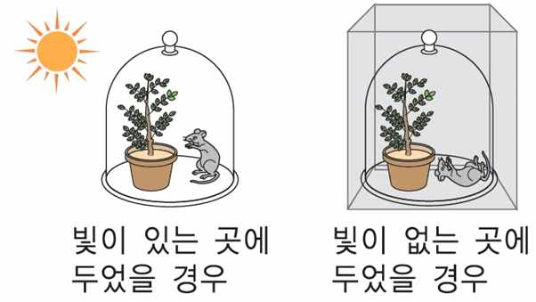

문제 4
다음은 잉엔하우스의 실험 결과로서, 식물체와 생쥐를 함께 유리 종 안에 넣어 준 후, 빛을 쬐어준 경우에는 생쥐가 살아 있지만(A), 빛을 차단한 경우 생쥐가 식물에 비해 먼저 죽는(B) 결과를 확인하였다. 다음 질문에 답하시오. (100점)

(가) A와 B의 실험 결과를 통해 증명된 사실은 무엇인지 설명하시오.(20점) 또한 이와 같은 식물체의 작용과 밀접하게 관련된 세포 내 소기관의 구조에 대해 설명하고(20점) 그 안에 존재하는 빛을 흡수하는 물질의 특성에 대해 기술하시오.(10점) (총 50점)
(나) 빛을 충분히 쬐어주고 난 후, 빛을 차단한 경우 일정 시간이 지나면 생쥐는 식물체보다 먼저 죽게 된다. 이 때, '가' 문제의 세포 내 소기관에서 일어나는 작용에 대해서 설명하시오.(20점) 만약 빛을 전혀 쬐어주지 않은 채 빛을 계속 차단한 경우와 문제에서처럼 일정시간 빛을 쬐어준 후, 빛을 차단한 경우를 비교하였을 때, 식물체의 '가' 문제의 소기관에서 일어나는 작용에 있어 차이점은 무엇이며, 그 이유에 대해서 설명하시오.(30점) (총 50점)